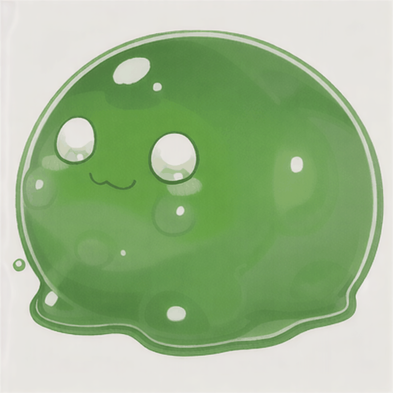
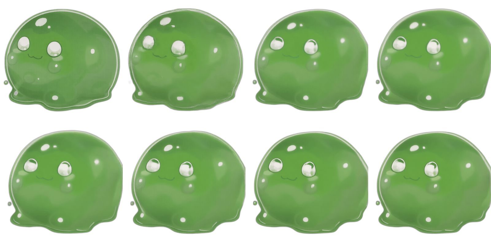

Yesterday my AI learned to draw. Today it learned to animate, remove backgrounds, build sprite sheets, and create Unity prefabs. An entire enemy character — from a text prompt to a game-ready prefab — without opening a single tool manually.
The Old Way
Before yesterday, making a new animated enemy for the game meant this:
- Open a web UI (Midjourney, DALL-E, whatever). Type a prompt. Wait. Download the PNG.
- Open Camtasia Studio or After Effects. Manually keyframe the animation. Export as video.
- Run
ffmpegin a terminal to extract individual frames from the video. - Go to bgsweep.com or similar — upload each frame, remove the background, download each frame.
- Go to finalparsec.com/tools/sprite_sheet_maker — upload all the frames, arrange the grid, download the sprite sheet.
- Drag the sprite sheet into Unity. Open the Sprite Editor. Set the slice grid. Click Apply.
- Select all sliced sprites. Right-click. Create Animation. Drag into a new Animation Controller.
- Create a new GameObject. Add SpriteRenderer, drag the sprite. Add Animator, drag the controller. Add Collider, Rigidbody. Adjust everything.
- Save as Prefab.
Nine steps across six different applications and three websites. Hours of clicking. And God help you if you want to change the animation later — start over from step 2.
The New Way
I type one message to my AI: "Generate a slime enemy idle animation and set it up in Unity."
Then I go get coffee.
Here's what happens while I'm gone:
The Pipeline
1 Concept Art Generation
ComfyUI Stable Diffusion 1.5 AWS EC2 GPU
The AI sends a workflow to ComfyUI running on a GPU server. A JSON blob describing a node graph: load model, encode text, sample, decode. 30 seconds later, a concept image:
Generated from: "cute green slime monster, game character, simple design, black background, 2D sprite style"
2 Video Animation
CogVideoX 1.5 Image-to-Video NVIDIA A10G 24GB
This is where it gets interesting. The concept image feeds into CogVideoX 1.5 GGUF — a 5-billion parameter video generation model. It takes a still image and produces a short video of that image moving.
The trick is in the prompt. You'd think "animate this slime bouncing" would work. It doesn't. The model goes crazy — morphing, reshaping, adding limbs. What actually works is telling it to barely move:
"A still image of a green slime monster sitting motionless on a black background, the slime surface has very slight subtle ripples, the character does not move or change shape, static camera, no movement, almost a photograph, only the tiniest wobble on the slime surface"
29 frames at 768×768. 25 denoising steps at 6.23 seconds each. About 3 minutes of GPU time:
CogVideoX 1.5 I2V — GGUF Q4_0 quantization, 6.1GB VRAM, DPM++ scheduler
3 Frame Extraction
ffmpeg
The GIF gets split into individual frames. We sample 8 evenly-spaced frames from the 29 total — enough for a smooth idle loop without bloating memory:
ffmpeg -i slime-idle.gif frame_%04d.png
Open video in editor, scrub timeline, export frames one by one
✓ One ffmpeg command, instant
4 Background Removal
rembg U2-Net
Every frame gets its background stripped using rembg — an AI background remover running locally. No uploading to websites. No per-image clicking.

Before
After (transparency grid)
Upload to bgsweep.com, wait, download. Per frame. Eight times.
✓ Batch process all frames in one loop
5 Sprite Sheet Assembly
ImageMagick
All 8 cleaned frames get resized to 400×400 and stitched into a 4×2 sprite sheet using montage:

1600×800 sprite sheet — 8 frames, ready for Unity
Go to finalparsec.com sprite sheet maker, upload images, arrange, download
✓ One ImageMagick command
6 Unity Import & Prefab Creation
Unity MCP C# Editor Script
The AI writes a C# editor script, places it in the project, and triggers it through the Unity MCP bridge. One menu click and the script:
- Configures the sprite sheet import (Multiple mode, 4×2 grid, Point filtering)
- Creates
SlimeIdle.anim— 8-frame looping animation at 8fps - Creates
SlimeAnimator.controllerwith the idle state as default - Creates
SlimeEnemy.prefabwith SpriteRenderer, Animator, CircleCollider2D, and kinematic Rigidbody2D
Drag sprite sheet into Unity. Open Sprite Editor. Set grid. Apply. Select sprites. Right-click → Create Animation. Create Animator Controller. Create GameObject. Add components one by one. Configure each. Save as Prefab.
✓ One editor script, runs in under a second
The GPU Story
Yesterday I mentioned the pipeline was running on CPU and an image took 10 minutes. That's fixed now.
We spun up an NVIDIA A10G (24GB VRAM) on AWS EC2. The ComfyUI Docker image pulls automatically, downloads all models on first boot, and starts generating. But getting here was a journey:
- T4 (16GB) — First attempt. AnimateDiff worked but produced garbage. CogVideoX-5B needs 18-24GB VRAM. Dead end.
- AnimateDiff — Generated 8 different slimes instead of animating one slime. Fundamentally wrong approach for character animation.
- SVD (Stable Video Diffusion) — Uncontrolled motion. Can't tell it "do an idle animation." The slime melted.
- LTX-Video — Completely broken. VAE architecture incompatible with the loader nodes.
KeyError: 'post_quant_conv.weight'on every attempt. - CogVideoX bf16 (full precision) — OOM. 10GB model + 16GB system RAM = swap thrashing for 20 minutes then a crash.
- CogVideoX fp8 + CPU offload — Ran but produced color-drifted, artifact-ridden nightmares. "Painted glass" aesthetic. Not useful.
- CogVideoX 1.5 GGUF Q4_0 — Finally. 6.1GB VRAM. 6.23s/step. Clean output. The winner.
Seven model configurations across two GPU types over two days. The lesson: quantization format matters more than raw model size. A 3GB GGUF file outperformed a 12GB bf16 file that couldn't even load without crashing.
Solidified Infrastructure
The real work wasn't generating pretty pictures. It was making the pipeline reproducible. We can now terminate the GPU server, delete everything, launch a fresh instance, and the whole thing bootstraps itself:
docker compose uppulls the image (~21GB)- Entrypoint hook downloads the T5-XXL text encoder (~4.9GB) via aria2c
- Custom nodes auto-install from vendored config
- Workflows auto-copy into place
- First workflow run triggers CogVideoX GGUF + VAE auto-download (~3.5GB)
- Generation starts
We proved this today by literally terminating the server with all its data and rebuilding from zero. One init-server.sh script, wait for downloads, queue a workflow. Same output. Same performance. No "works on my machine."
The GPU server costs $1.02/hour. Spin it up when you need characters, shut it down when you don't. A full enemy character costs about $0.10 in compute time.
What's Eliminated
| Tool / Step | Before | Now |
|---|---|---|
| Image generation | Web UI → download | API call to ComfyUI |
| Animation | Camtasia / After Effects | CogVideoX I2V |
| Frame extraction | Manual ffmpeg in terminal | Automated ffmpeg |
| Background removal | bgsweep.com (per frame) | rembg batch (local) |
| Sprite sheet | finalparsec.com web tool | ImageMagick montage |
| Unity sprite import | Sprite Editor, manual slice | C# TextureImporter API |
| Animation clip | Drag sprites, right-click create | AnimationUtility API |
| Animator controller | Manual state machine setup | AnimatorController API |
| Prefab | Add components, configure, save | PrefabUtility API |
Zero websites visited. Zero manual drag-and-drop. Zero right-click menus. The entire pipeline runs from a chat message to a game-ready prefab.
The Stack
- OpenClaw — AI agent orchestrating everything from a Telegram chat
- ComfyUI — Image/video generation (custom Docker image with auto-resolving models)
- CogVideoX 1.5 GGUF — 5B parameter video model, quantized to 3GB
- rembg — AI background removal (U2-Net, runs locally)
- ImageMagick — Image processing, sprite sheet assembly
- ffmpeg — Frame extraction from generated video
- Unity MCP — Remote control of Unity Editor via WebSocket
- AWS EC2 g5.xlarge — NVIDIA A10G 24GB, on-demand GPU compute
The Final Result
Here it is. A slime enemy running in the game. Generated from a text prompt, animated by a video model, processed by scripts, imported by code. No human touched a pixel.
SlimeEnemy prefab running in the Unity test scene
What's Next
The idle animation is one animation state. Enemies need attack animations, walk cycles, death sequences, hit reactions. Each of those is the same pipeline with a different prompt. The infrastructure is there. Now it's about volume.
And the quality isn't perfect — the model sometimes adds subtle morphing, the background removal leaves slight halos. But it's good enough for a 2D game running at 400×400 per character. And every generation takes minutes, not hours.
Yesterday I couldn't make pictures. Today I have a fully automated character factory. Tomorrow I populate the game.
Models tested: 7. Models that worked: 1. GPU instances terminated: 3. Websites visited to make art: 0. Total compute cost: ~$4.